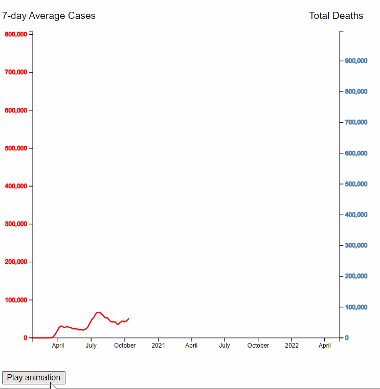
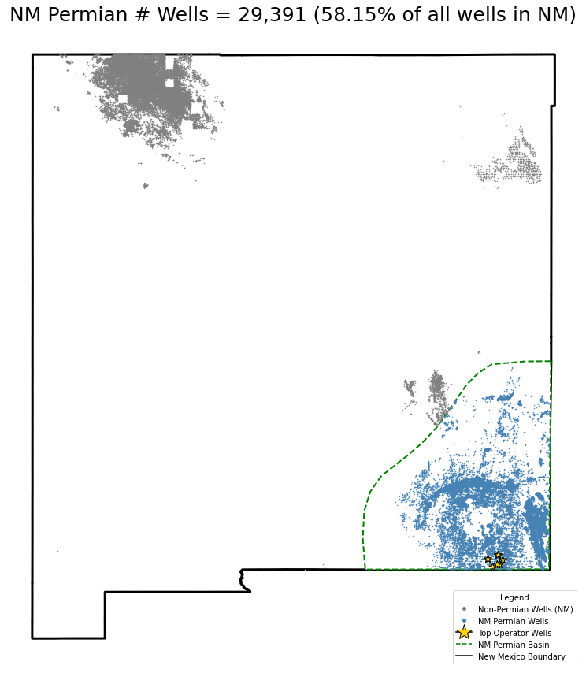
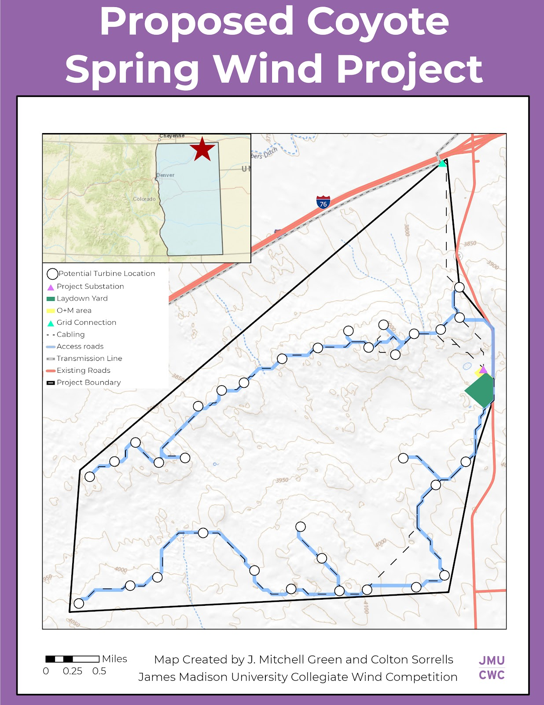
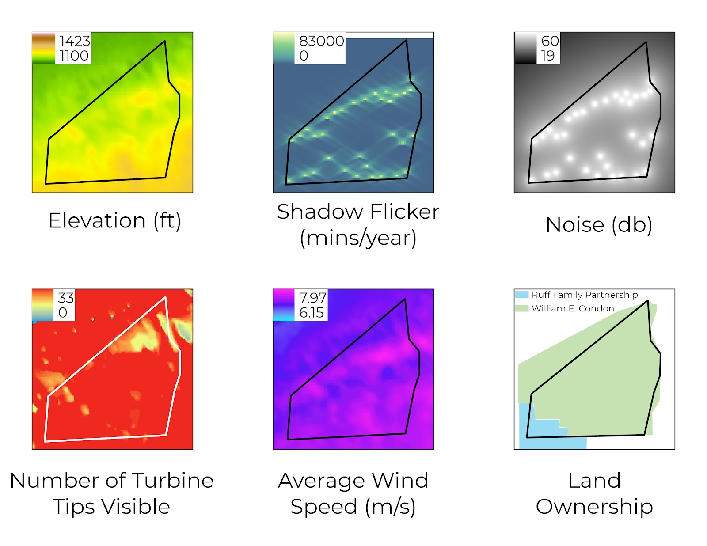
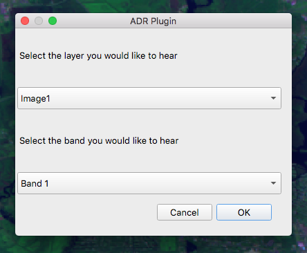
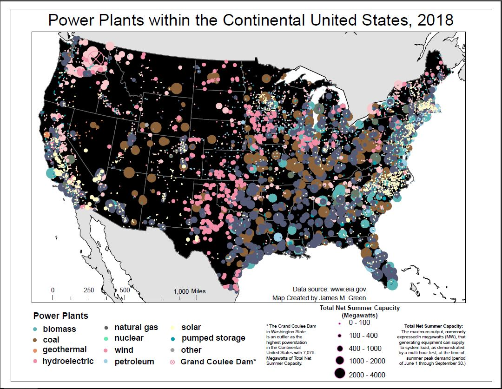
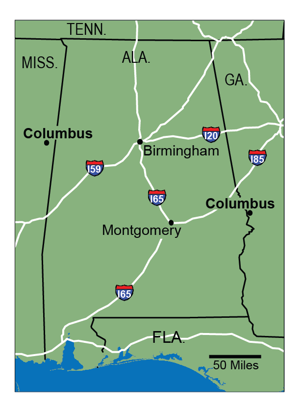
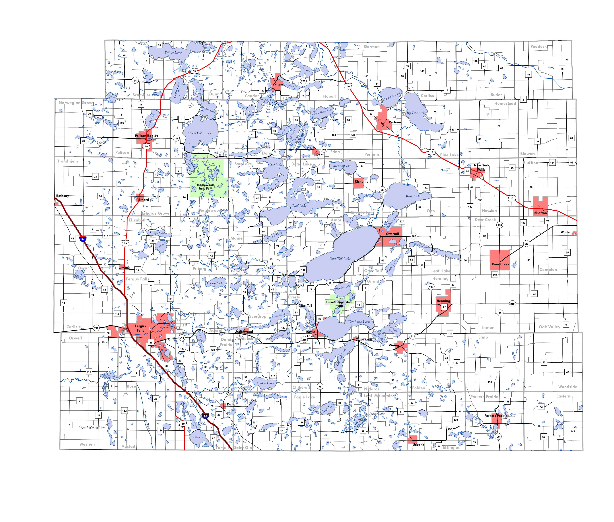
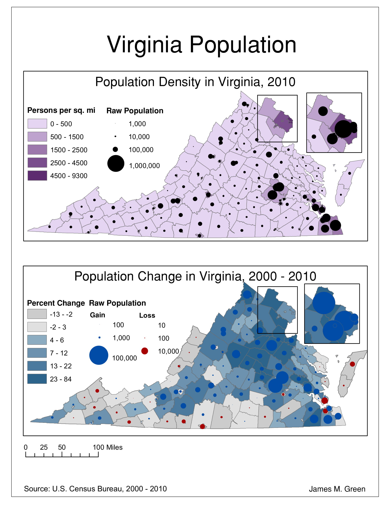

About
- Aspiring geospatial software developer.
- Current GIS Specialist.
- Former Geography student.
More about me
I'm currently a GIS Specialist at GAI Consultants where I work full time for Avangrid Renewables building apps, drawing maps, and managing geospatial data for utility scale solar and wind energy projects.
I studied Geographic Science at James Madison University focusing in applied Geographic Information Systems (GIS) and environmental sustainability.
Some noteworthy projects at James Madison include winning 1st place in the Collegiate Wind Competition, creating a custom QGIS Plugin, and receiving JMU's 2020 Geographer of the Year award.
Projects
Every building in Pittsburgh, PA, 2022
[Mapbox GL, Python, OpenStreetMap, Node.js]
COVID-19 Deaths in the US, 2022
[D3.js]
Number of every public step in Pittsburgh, PA, 2022
[D3.js]
Oil and Gas Emissions, New Mexico, 2022
[Python, Geopandas, Matplotlib]
Flora Fun, 2021
[C#, ASP.NET]
Collegiate Wind Competition, 2020
[ArcPro, OpenWind]
Collegiate Wind Competition, 2020
[ArcPro, OpenWind]
Custom QGIS Plugin, 2020
[QGIS, Python]
US Power Plants, 2020
[ArcPro]
Northwestern US, 2019
[ArcMap]

Alabama, 2019
[ArcPro, Adobe Illustrator]
Otter Tail County, MN, 2019
[ArcMap]
Virginia Population, 2019
[ArcMap]
Mountain Top Removal, WV, 2018
[PCI Geomatica]